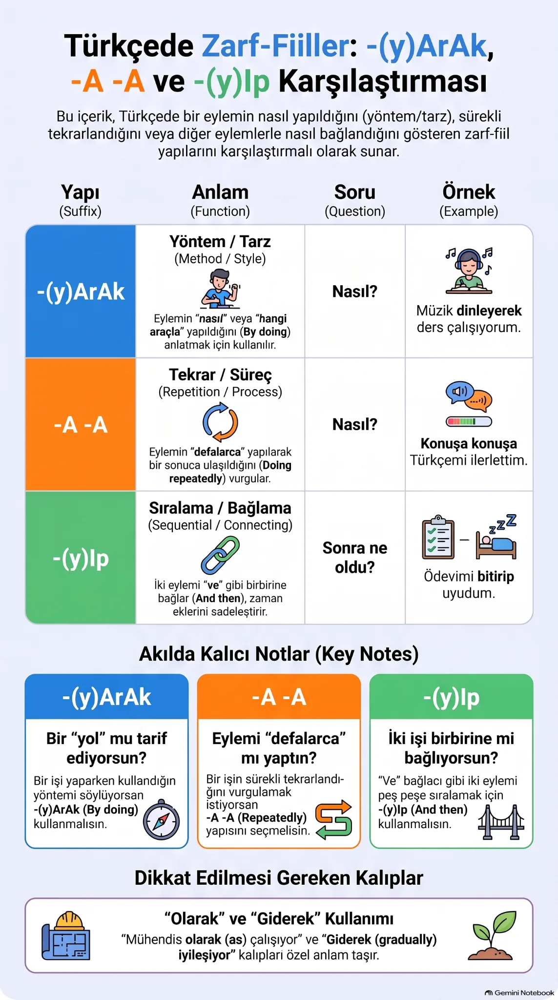

Nasıl? Hangi yöntemle?
Müzik dinleyerek çalıştım.1. İki cümleden bir cümleye
Zarf-fiiller bir eylemi başka bir eyleme bağlar. Bize bir işin nasıl veya ne zaman yapıldığını söyleyebilir. (They connect actions and add information about manner, sequence or time.)
Ayrı cümlelerAnnesinin yanına gitti. Koştu.
Birleşik cümleAnnesinin yanına koşarak gitti.
Koşarak, “Nasıl gitti?” sorusunu yanıtlar. Bu dersteki örneklerde bağlanan iki eylemin öznesi aynıdır.
2. Hangi anlamı söylemek istiyorsun?
Tekrar ederek, zaman içinde nasıl?
Konuşa konuşa öğrendim.Hangi işleri birbirine bağlıyorum?
Ödevimi bitirip uyudum.Ne zaman? Hangi durumda?
Ders çalışırken telefon çaldı.3. Yöntem ve yapılış biçimi
Soru: Nasıl? Hangi yolla? (How? By doing what?)
Bir işi hangi yöntemle veya nasıl yaptığımızı söyleriz.
Okula yürüyerek gidiyorum. → Nasıl gidiyorum?
Türkçe diziler seyrederek yeni kelimeler öğreniyorum.
Müzik dinleyerek ders çalışıyorum.
Biçim
bak → bakarak · gel → gelerek · oku → okuyarak. Ünlüyle biten fiilden sonra y gelir.
Olumsuz biçim ve özel kelimeler
Olumsuz biçim -mAyArAk: “Telefonuna bakmayarak dersine daha iyi odaklandı.” (by not looking at her phone)
Olarak: “Babam mühendis olarak çalışıyor.” → rol/meslek (as an engineer).
Giderek: “Hava giderek soğuyor.” → zamanla değişme (gradually).
Giderek: “Hava giderek soğuyor.” → zamanla değişme (gradually).
4. Tekrar ve süreç: -A…-A
Soru: Tekrar tekrar yaparak mı? (Repeatedly? Over time?)
Aynı fiili iki kez söyleriz. İşin tekrarını, sürmesini veya böylece bir sonuca ulaşılmasını vurgularız.
Konuşa konuşa Türkçemi ilerlettim. → Birçok kez konuşarak.
Sokakları geze geze istediğimiz evi bulduk.
Çocuk annesine koşa koşa gitti. → Heyecan ve isteklilik de hissedilebilir.
Biçim
konuş → konuşa konuşa · gez → geze geze · oku → okuya okuya.
Dikkat: Her zaman “hiç durmadan” anlamına gelmez. Güle oynaya gibi, farklı fiillerle kurulmuş yerleşik kalıplar da vardır.
5. Eylemleri bağlama: -(y)Ip
Soru: Hangi işleri birbirine bağlıyorum? (Related actions; often “and then”.)
Birbiriyle ilgili işleri tek cümlede birleştirir. Çoğu örnekte bir işin ardından diğeri gelir. İki fiilin öznesi genellikle aynıdır; kişi ve zaman bilgisi son fiilden anlaşılır.
Sabah kalkıp kahvaltı yaptım. → İki işi yapan da benim.
Ödevini bitirip uyudu.
Arkadaşlarımla buluşup ders çalıştık.
Biçim
kalk → kalkıp · gel → gelip · oku → okuyup · gör → görüp. Ünlüyle biten fiilden sonra y gelir.
Dikkat: Sıralama sık görülür ama zorunlu değildir: “Gülüp konuştu” cümlesindeki işler aynı anda da olabilir.
6. Zaman ve durum: -(y)ken
Soru: Ne zaman? Hangi durumdayken? (When? While in what state?)
Bir olayın zamanını veya içinde bulunduğumuz durumu söyleriz. Ek -ken biçiminde kalır; -kan olmaz.
İsim ve sıfatlarla
Çocukken çok sessizdim. (When I was a child.)
Annem hastayken ona yardım ettim.
Babam evdeyken birlikte yemek yeriz.
Fiillerle
Ders çalışırken telefon çaldı. → Çalışma devam ediyordu.
Markete gitmişken süt de al. → Zaten gidiyorsun; fırsatı kullan. (While you are there.)
Tam dışarı çıkacakken yağmur başladı. → Çıkmak üzereydim. (Just as I was about to leave.)
Kullanım notu: “Ders çalışırken” günlük dilde doğaldır. “Çalışıyorken” de mümkündür; başlangıçta çalışırken biçimi yeterli.
7. Benziyorlar; aynı şeyi söylemiyorlar
yürüyerek / yürüye yürüye
“Okula yürüyerek gittim.” → Ulaşım yöntemim yürümekti. “Bütün gün yürüye yürüye yoruldum.” → Uzun yürüyüşün sonunda yoruldum.
açıp / iterek
“Kapıyı açıp içeri girdim.” → İşleri bağlıyorum. “Kapıyı iterek açtım.” → Nasıl açtığımı söylüyorum.
gelip / gelirken
“Okula gelip derse girdim.” → İki iş. “Okula gelirken arkadaşımı gördüm.” → Görme olayının zamanı.
Görsel özet

Paylaştığın görsel ilk üç yapıyı yan yana gösteriyor. Görseli büyük aç. Dördüncü yapı olan -(y)ken için yukarıdaki bölüme bak.
8. Kendini dene
Önce cevabı düşün; sonra soruya dokunup gerekçeyi aç.
1. “Her gün Türkçe ___ yeni kelimeler öğrendim.” (konuş)
konuşarak → Öğrenme yöntemi. Zaman içindeki tekrarı vurgulamak için “konuşa konuşa” da olur.
2. “Türkçe ___ konuşmam gelişti.” (konuş)
konuşa konuşa → Tekrar ve zamanla gelişme öne çıkıyor. “Konuşarak” da mümkündür, yöntemi vurgular.
3. “Ödevimi ___ uyudum.” (bitir)
bitirip → Önce ödevi bitirdim, ardından uyudum.
4. “Kitap ___ kapı çaldı.” (oku)
okurken → Kitap okuma sürerken başka bir olay oldu. “Ne zaman?” sorusunun cevabı.
5. “Markete ___ süt de alır mısın?” (git)
gitmişken → Zaten markete gideceğin için bu fırsattan yararlan.
6. “Sokakları ___ şehri öğrendik.” (gez)
geze geze → Tekrar tekrar gezip zaman içinde öğrendik. “Gezerek” de yöntem anlatmak için kullanılabilir.